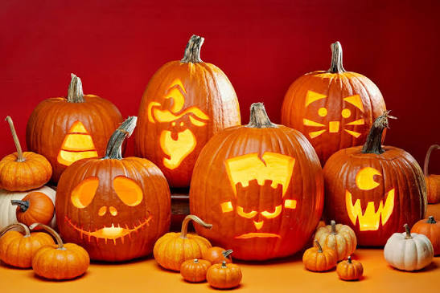
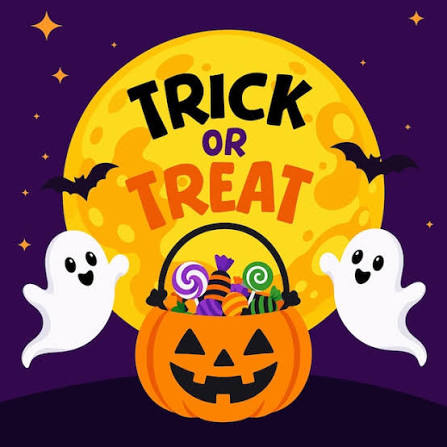

Discover fun activities to celebrate Halloween
Pumpkin Carving 🎃

Pumpkin carving is a popular Halloween tradition. People carve faces and creative designs into pumpkins to make jack-o'-lanterns.
Trick-or-Treating 🍬

Trick-or-treating is a favorite Halloween tradition. Children dress up in costumes and visit homes in their neighborhoods, saying "trick or treat" to receive candy and other treats.
Halloween Costumes 👻

Wearing costumes is one of the most exciting parts of Halloween. People dress up as witches, vampires, ghosts, superheroes, and their favorite movie characters. Some families and friends even coordinate their costumes!
Haunted Houses 🏚️

Haunted houses offer a spooky adventure for Halloween. They often feature creepy decorations, scary sounds, fog, and surprising encounters. Visitors walk through themed rooms for a thrilling Halloween experience.